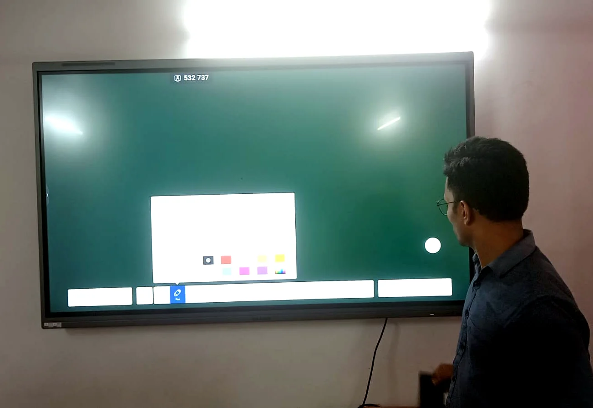
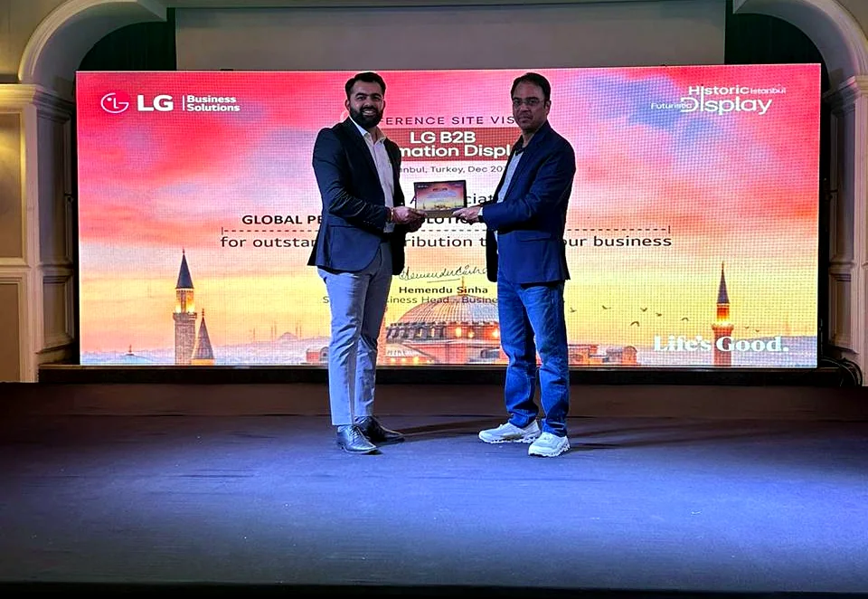

Interactive display and board workflow
Interactive panels, smart boards, annotation, whiteboarding, screen sharing and teacher-side inputs are selected around classroom size and daily teaching style.

Smart Classroom AV Integrator
GPSPL designs smart classrooms with interactive displays, projectors, classroom audio, cameras, lecture capture readiness, content sharing, installation, teacher orientation, warranty coordination and AMC support.
Supply + Design + Integrate + Support
A classroom system should help the teacher start quickly, write clearly, share content, keep students engaged, support hybrid participation and remain easy for IT teams to maintain after handover.
 MAXHUB
MAXHUB Newline
Newline Epson
Epson Lumens
Lumens Sennheiser
SennheiserInteractive panels, smart boards, annotation, whiteboarding, screen sharing and teacher-side inputs are selected around classroom size and daily teaching style.
Projectors, screens and commercial displays are planned around viewing distance, brightness, board position, glare, seating depth and service access.
Teacher microphones, room speakers, audio processing and hybrid meeting audio are selected for speech clarity and fatigue-free teaching.
Teacher orientation, documentation, warranty coordination, preventive maintenance and support planning keep classrooms usable after installation.
Classroom Design Blueprint
A professional classroom BOQ should not start with a fixed panel size or an assumed projector model. GPSPL studies the room, teaching workflow, display visibility, audio coverage, content sharing, camera requirement, installation condition and support plan before freezing the solution direction.
Interactive flat panels and smart boards are evaluated by writing experience, screen size, brightness, touch accuracy, anti-glare requirement, operating system, software compatibility, mounting height and teacher comfort. GPSPL checks whether the room needs a mobile stand, wall mount, OPS PC, annotation software, wireless casting or additional inputs.
Projectors remain useful where a larger image is needed, where wall space is wide or where budget and classroom size make projection practical. GPSPL checks throw distance, screen size, ambient light, ceiling mount height, cable route, lamp or laser preference, whiteboard position and maintenance access before recommending projector and screen scope.
Teacher voice must remain clear without forcing the teacher to speak loudly all day. GPSPL plans microphones, speakers and amplification based on room area, ceiling height, student distance, background noise and hybrid or recorded-session requirements. The objective is even speech coverage, controlled volume and simple operation.
Hybrid learning and lecture capture require camera placement that can frame the teacher, board and student interaction without distracting the class. GPSPL may recommend PTZ cameras, document cameras, USB cameras or recording-ready routing depending on whether the classroom needs live streaming, remote participation or archived lectures.
Classrooms need reliable HDMI, USB, Type-C, wireless presentation, network and power access. GPSPL plans cable routing, floor or wall inputs, teacher desk connectivity, device charging, source switching and display handover so faculty can start sessions without IT support every time.
Mounting, cable dressing, labeling, device configuration, testing, teacher training and support documentation are part of the classroom outcome. GPSPL treats handover as a project deliverable, because a system is only successful when teachers can use it confidently.
Education AV Scope
GPSPL can support smart classroom projects for schools, colleges, coaching centres, universities, training institutes and corporate learning rooms. The scope may include interactive panels, projectors, projection screens, teacher microphones, ceiling or wall speakers, PTZ cameras, document cameras, wireless presentation, OPS computers, classroom PCs, UPS backup, network coordination, installation, commissioning, teacher orientation and AMC.
Small classrooms may need a single interactive panel and simple audio support. Larger classrooms may require projection, additional speakers, stronger teacher microphones or a camera for hybrid learning. Seminar rooms and lecture halls may need larger displays or projectors, wireless microphones, recording-ready camera positions and operator-friendly source switching. GPSPL maps the room type before recommending product families so clients do not pay for unnecessary hardware or miss important teaching requirements.
Education Use Cases
One campus can contain multiple room types: regular classrooms, labs, lecture halls, seminar rooms, training rooms, auditoriums, faculty rooms and hybrid classrooms. GPSPL helps standardize the user experience while still matching each room to its real teaching requirement.
These spaces need simple teacher operation, durable interactive displays or projectors, classroom audio, content sharing and quick support. GPSPL plans mounting height, viewing distance, cable safety and teacher handover so daily classes remain smooth.
Higher education rooms often need larger display systems, hybrid lecture capability, recording readiness, document cameras, microphones and multiple input sources. GPSPL designs for faculty comfort, student visibility and IT manageability.
Training rooms need presentation clarity, instructor mobility, screen sharing, participant audio and sometimes video conferencing. GPSPL can integrate displays, cameras, microphones, speakers and switching into a repeatable workflow.
Labs may need document cameras, high-resolution display, instructor camera, device input, recording and safe cable routing. GPSPL plans technology around demonstration visibility and practical room movement.
Hybrid learning needs clear teacher audio, remote student participation, camera framing, content capture and simple start-up. GPSPL plans the full signal path so classroom and remote users receive a consistent experience.
Education deployments need predictable service because classroom downtime affects schedules. GPSPL can include preventive maintenance, warranty support, user refresh training and upgrade guidance for long-term ownership.
Education Project Gallery
These visuals focus on classroom display visibility, interactive teaching, training-room presentation, cable access and learning-space support requirements.





Value Engineering
A smart classroom should not be over-designed with technology that teachers avoid using. GPSPL evaluates whether the room genuinely needs an interactive panel, projector, camera, microphone, speaker system, recording workflow or advanced switching. A small classroom may work best with one reliable interactive display and simple teacher audio. A larger lecture room may need projection, wireless microphone, camera and better audio coverage. A hybrid classroom may need lecture capture, content routing and remote-participant audio.
Value engineering also protects support teams. If every classroom uses a different connection method, different remote, different panel workflow and different support process, adoption suffers. GPSPL can help standardize product families, input locations, teacher instructions, cable labeling, warranty records and AMC schedules across a campus while still allowing exceptions for labs, seminar halls and premium lecture rooms.
Final pricing depends on selected brands, screen size, projector type, microphone choice, speaker quantity, cable route, mounting condition, network readiness, UPS requirement and teacher training scope. GPSPL provides planning direction first, then confirms the formal quotation after site validation and client approval.
GPSPL supports product shortlisting, procurement, installation, classroom audio, display mounting, camera setup, content sharing, testing, teacher orientation, documentation, warranty coordination and AMC readiness.
Request Classroom SurveyImplementation Standard
Institutions often invest in classroom technology but do not receive full value because the installation is difficult to use, poorly documented or inconsistent from room to room. GPSPL designs classroom AV so faculty can teach confidently, students can see and hear clearly, and IT teams can support the room without guesswork.
The best classroom technology is the one teachers actually use. GPSPL keeps controls simple, labels inputs clearly and supports teacher orientation after commissioning. If a room has an interactive display, camera, microphone and wireless sharing, the workflow should still feel like a normal class: power on, open content, write, share, speak and close the session.
Students must be able to read text from the back row. GPSPL checks room depth, screen size, font-heavy content, glare, mounting height and seating angle before recommending display or projection size. This prevents undersized displays in deep classrooms and avoids oversized panels where a more practical option would work better.
Smart classrooms may need network access, device naming, firmware policy, wireless casting rules, USB routing, OPS PC management and content security. GPSPL coordinates these details with IT teams so classroom systems remain manageable after installation, especially when multiple rooms are deployed across a campus.
Classroom installations should protect students and faculty. GPSPL checks wall strength, trolley stability, cable routing, power point location, floor safety, projector mounting, speaker fixing and rack placement. Clean installation reduces accidental damage and keeps daily operation professional.
Handover documentation can include product serials, warranty details, cable labels, input names, basic operating steps and support contact flow. This matters when faculty changes, IT staff rotates or a room needs troubleshooting before an important lecture or exam session.
Education environments need preventive checks because classroom downtime disrupts academic schedules. GPSPL can plan AMC, spare coordination, warranty support, periodic cleaning, firmware checks, audio testing and teacher refresher sessions depending on the institution's support expectation.
Buyer Guide
When comparing smart classroom quotations, the lowest product price is not always the lowest project cost. A quotation should show whether mounting, cabling, installation, teacher training, warranty coordination, content sharing accessories, audio support and AMC are included. A low quote that excludes installation accessories, cable routing, input plates, wall reinforcement, UPS, microphone setup or training can become expensive once the classroom is actually deployed.
GPSPL helps institutions compare the full system. For an interactive display classroom, the key questions are screen size, writing response, warranty, mounting, connectivity, software support and teacher comfort. For a projector classroom, the questions are brightness, throw distance, screen quality, lamp or laser life, mount height and service access. For hybrid classrooms, camera position, microphone pickup, recording output, remote audio and content sharing become critical. For large lecture rooms, audio coverage and display readability usually decide whether the room works well.
A campus-wide smart classroom project should also consider standardization. If the same display family, cable labels, teacher instructions and support process are used across rooms, adoption improves and maintenance becomes easier. GPSPL can create a practical room-category approach: essential classroom, interactive classroom, hybrid classroom, lecture room and training room. Each category receives the right technology level instead of one expensive design being copied everywhere.
Final commercial scope is validated after site survey because wall condition, ceiling height, cable path, power, network, lift access, installation timing and classroom occupancy can change labour and accessories. This approach gives buyers a strong planning direction while keeping final quotation responsible and site-backed.
Search Intent Coverage
Education buyers often search in simple language: smart classroom solution provider, hybrid classroom solution provider, digital classroom setup, interactive panel for classroom, smart board installation, classroom projector and speaker system or lecture capture setup. GPSPL connects these terms to the actual system requirement: display readability, teacher workflow, classroom audio, camera framing, content sharing, installation safety, training and AMC.
For a basic smart classroom, the right solution may be an interactive flat panel with safe mounting and teacher orientation. For a hybrid classroom, the system may need camera, microphone, speaker, lecture capture output, remote audio and content sharing. For lecture halls or training rooms, display size, audio coverage and support readiness become more important than simply buying a bigger screen.
Smart Classroom FAQ
Interactive displays are strong for direct teaching, touch, annotation and screen sharing. Projectors are useful for larger image sizes and deeper rooms. GPSPL checks viewing distance, brightness, board use, wall condition, room depth and teaching style before recommending one or both.
No. Small quiet classrooms may not need a full audio system. Larger rooms, hybrid classrooms, recorded sessions and teacher voice-support rooms often need teacher microphones, speakers and amplification for consistent speech clarity.
Yes. GPSPL can plan cameras, microphones, content routing, recording-ready outputs, display sharing, remote-participant audio and teacher-friendly operation for hybrid learning rooms.
Room size, seating, ceiling height, board position, light condition, display preference, teaching workflow, camera requirement, audio requirement, existing equipment, power, network and support expectations help GPSPL create a stronger BOQ.
Yes. GPSPL can include teacher orientation, handover notes, warranty coordination, preventive maintenance, troubleshooting and AMC support depending on the final scope.
RFQ Checklist
Share these details and GPSPL can recommend the right display, audio, camera, installation scope and support plan.
Room dimensions and seating
Room purpose
Display preference
Audio and camera needs
Site readiness
Training and AMC scope